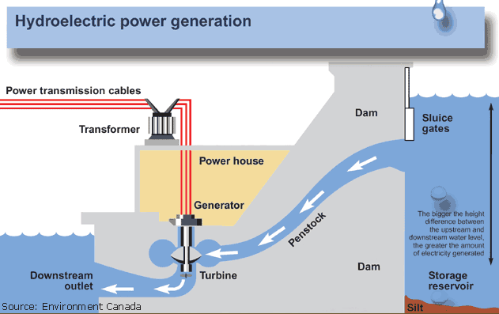

Overview
Hydropower is one of the oldest and most widely used forms of renewable energy in the world. By converting the energy of flowing or falling water into electricity, hydropower has played a critical role in industrial development, urban expansion, and the global transition toward sustainable energy. This project explores hydropower as a major engineering success, focusing on how engineering innovation, teamwork, and leadership contributed to its development and large-scale implementation.
This website presents a detailed analysis of hydropower systems, examining the historical context, engineering disciplines involved, and the broader cultural and societal impacts that led to its success.

The Story at a Glance
The main players
Hydropower development has involved a wide range of contributors, including civil engineers, mechanical engineers, electrical engineers, environmental scientists, government agencies, and construction teams. Individual names like Franklin D. Roosevelt and James B. Francis present themselves as people who are integral to the advancement of this technology.
Major hydropower successes like large scale dams, are often led by teams of engineers and government organizations working collaboratively to solve the problems presented with harnessing waterpower.
A new way to generate electricity
Hydropower is the use of moving water to generate electricity. It's usually set up so that water flows it's natural direction, and turbines are put in place to be rotated by the flow, and then generators turn that kinetic energy into electrical energy.
The reason this design is so effective and so popular is because it is relatively clean, aside from affecting wildlife, and it is also running 24/7 to return constant electrical power. It's downsides are mainly high cost startup, but the efficiency and consistency it provides after construction are unparalleled.
All of history!
Mechanical hydropower dates back thousands of years, with use in mills and irrigation systems, but today hydropower is run by electric generators, and has resulted in large scale facilities being developed in the 1900s, providing electricity for many.
The design of the dams became more and more popular as people began to realize the potential of hydroelectricity, and they quickly became a staple in 1st world countries.
Rivers and lakes
Hydropower facilities are normally located in places with large water resources such as rivers or lakes, and if these areas have any elevation changes, thats even better. The selection of a location to build a dam is a critical step in the engineering process, affecting the future of the plant many years down the road. These projects can be located around the world, but the first large-scale plant was located in the US.
Turbines and Generators
Hydroelectric power is a process that integrates many different inventions and concepts into one. First, the falling/flowing water contacts a turbine which then turns. The turbine is connected to a generator which will also turn when the turbine turns, and the generator will turn magnets around a loop of wire so to create an electrical current through that wire, which then can power objects that require electricity.
- Waterpower has succeeded throughout time due to it being a near universal resource that is plentiful and dependable.
- Innovation in related fields such as electrical generators, as well as general engineering organizations and contruction advancements have allowed hydroelectric dams to prosper.
- Economic demand for a reliable source of electricity also pushed this technology to advancement.
- Hydropower has also been supported by many large powers such as governments, giving the technology the resources to progress